Project 2: Fun with Filters and Frequencies!
Jason Lee
Gradient Magnitude Computation
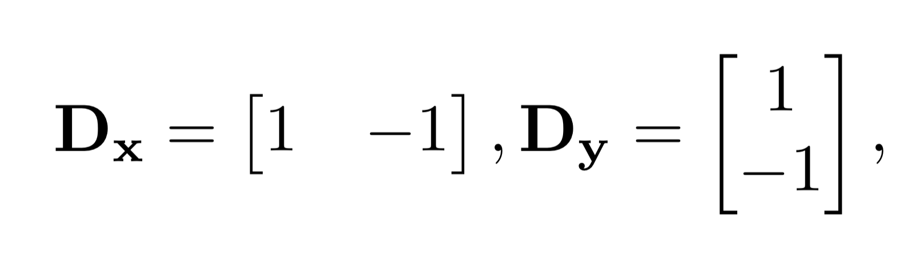
Finite Difference Operators
To compute the gradient magnitude of an image, we must first compute two 2D convolutions using the finite difference operators shown in the image above.
The first convolution is with the Dx filter, which yields the derivative of the image in the x-direction. Let's call its output img_dx.
The other convolution is with the Dy filter, resulting in the image's derivative in the y-direction. Let's call this img_dy.
It's crucial that img_dx and img_dy both have the same dimensions, so same padding must be used when computing these convolutions.
Then, taking the pixel-wise euclidean norm of the two image gradients, resulting in the gradient magnitude of the image.
Finally, binarize the gradient magnitude using a threshold parameter, setting all pixel values above this threshold to one, otherwise zero.
To visualize this gradient magnitude calculation process, see the example below using an image of a person taking a photo.

img_dx
|
|
|
|
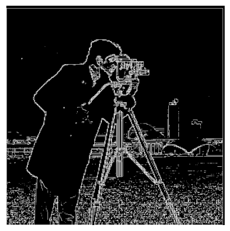
Binary Gradient Magnitude with threshold=20
|
Derivative of Gaussian (DoG) Filter
The filter explained in the part above is very granular and sometimes detects edges due to noise in the image. To handle this, let's apply a Gaussian filter to the image, then repeating the same process.
To see how the Gaussian filter affects the output image, see the comparison below.
What are the visual differences between the approaches?
The original method of solely using the fininte difference operator generates a lot of noise and false edges, especially on the grass and on the left of the person in the image.
While, applying the Gaussian filter removes this extra noise, it makes the lines thicker. The line thickness depends on the value of sigma used for the Gaussian filter (I used sigma=2, as that removed most of the artifacts).
Applying Finite Difference Operators
|
Convolving with Gaussian then applying Finite Difference Operators
|
|
Applying Finite Difference Operators with threshold=20
|
Convolving with Gaussian then applying Finite Difference Operators w/ threshold=5.5
|
Associativity of Convolutions
One cool property of Convolutions is that they are associative, meaning that: a * (b * c) = (a * b) * c. This means a single filter can be applied to the image to compute the gaussian dx filter and a gaussian dy filter.
Applying the gaussian_dx and gaussian_dy, then computing the gradient magnitude yields the results shown below.
As you can see, we get the same result as before.
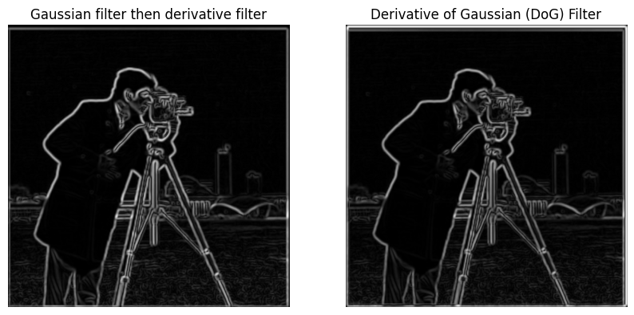
Part 2: Multi-resolution Blending and the Oraple journey
Unsharp Masking Progression
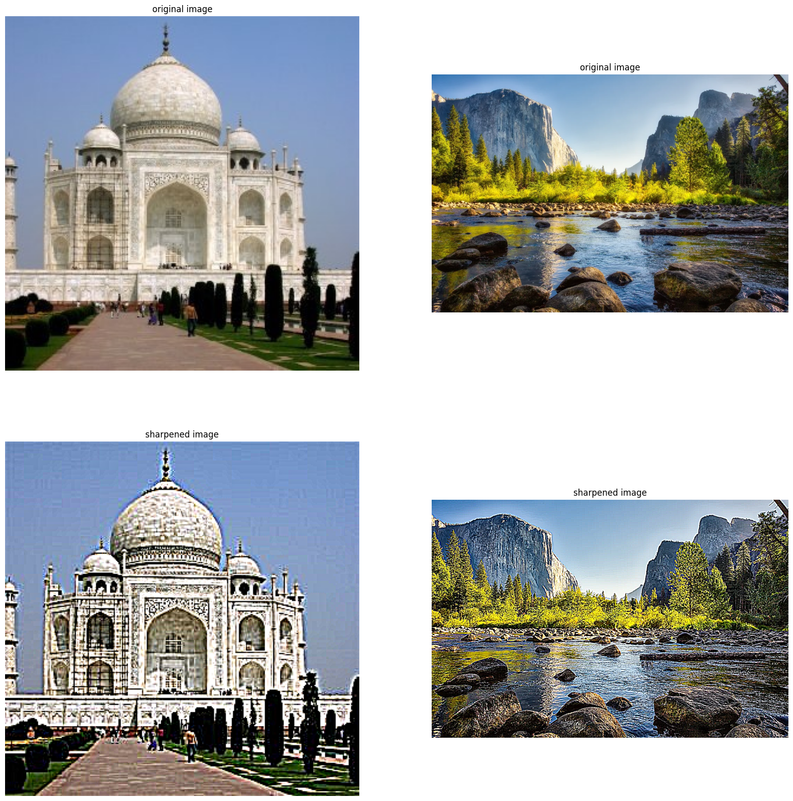
To verify this method works, let's take a sharp image, blur it, then resharpen it.
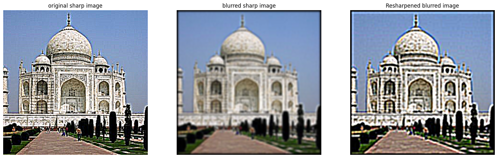
Hybrid Images
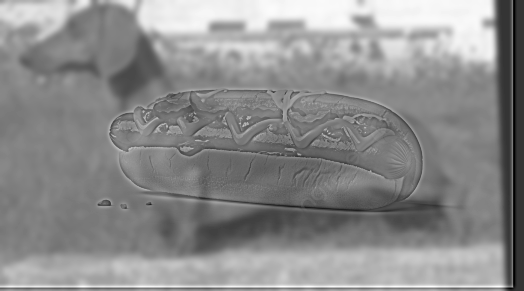
|
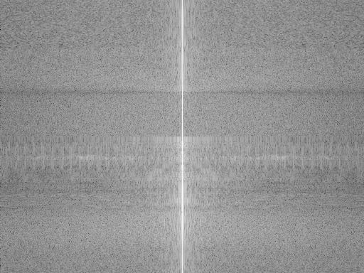
Weiner Dog (LP)
|
Hot Dog (HP)
|
|
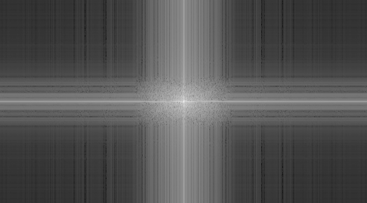
Low Pass Filtered Weiner Dog
|
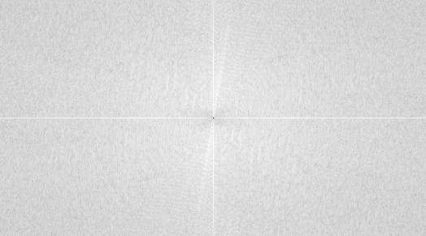
High Pass Filtered Hot Dog
|
Here are some more fun examples! Zoom in/out of the page to see the effect
|
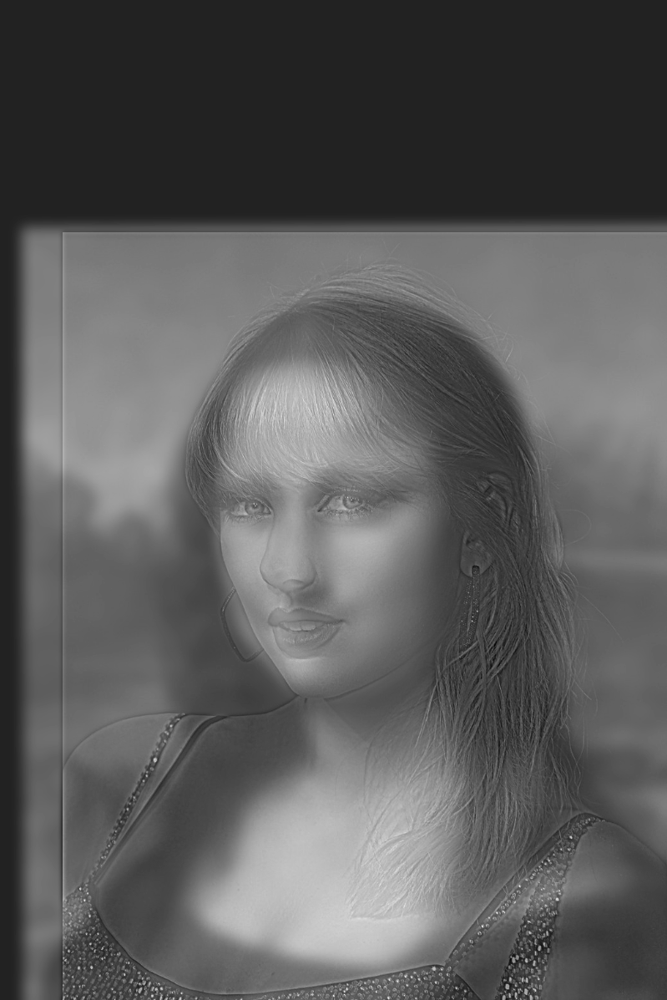
Mona Swift
|
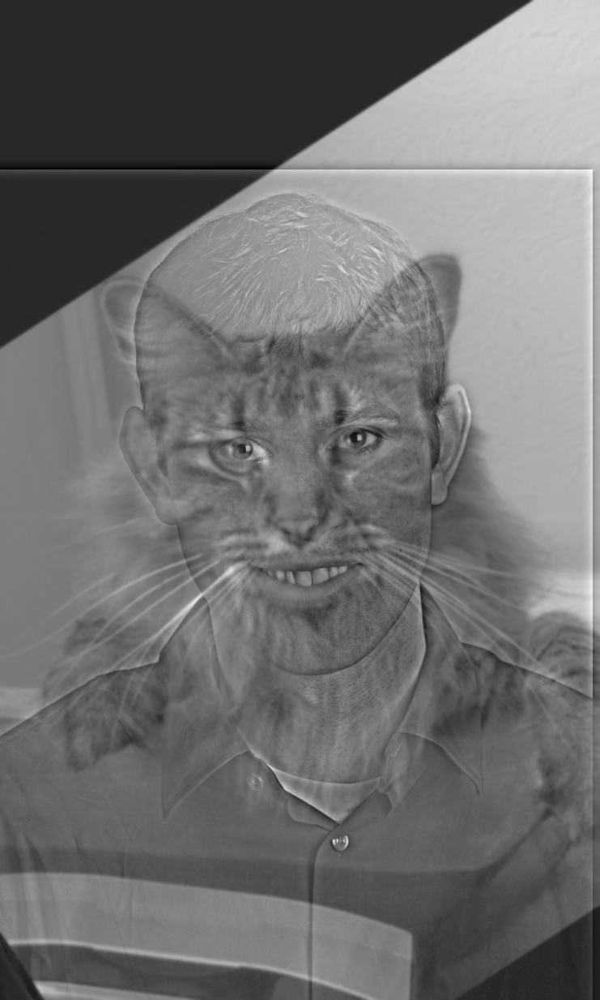
Nutmeg + Derek
|
|
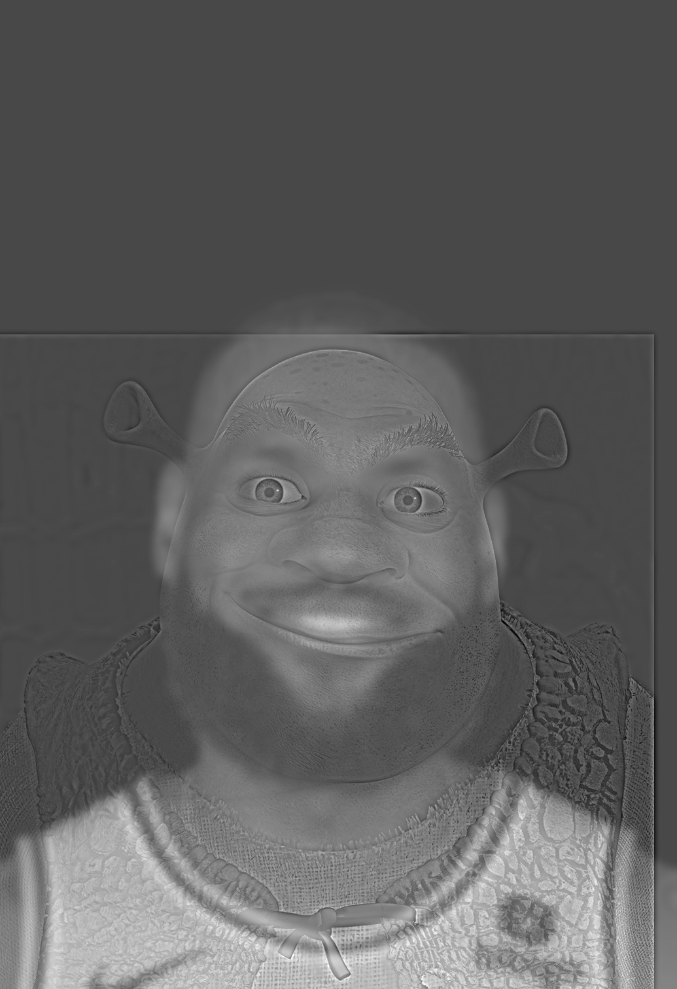
LeShrek
|
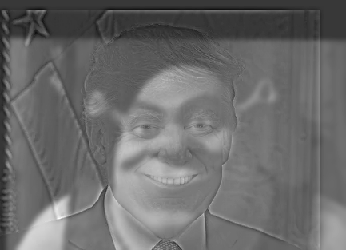
Shrump (Shrek + Trump) (FAIL)
|
Multiresolution Blending + Oraple
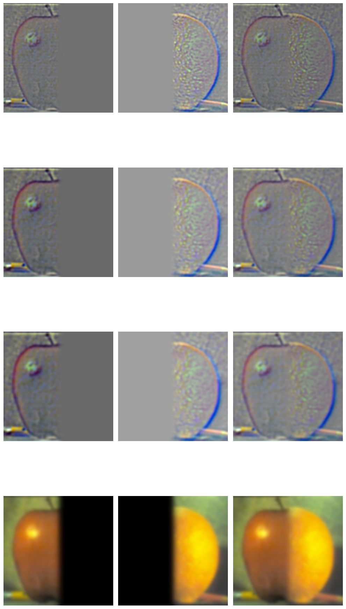
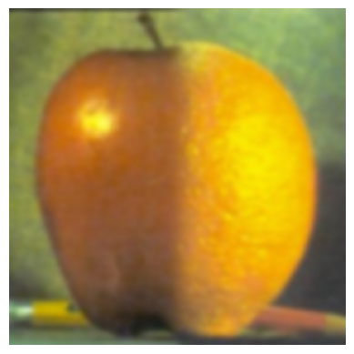
Some more examples of blending...
Shrek Sun
with non-linear mask!
|
|